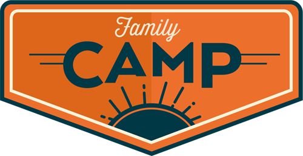

Since the establishment on 13th August 1999, Aziz's Car House is engaged in car selling, displaying and purchasing market in Bangladesh. Today the company has grown into a leading provider of quality services in Bangladesh Car Market. More then 10 years experience has reached us to the reputation in the car market and put us in a competitive advantage over the others. We are reputed in attaining the requirements of our national buyers especially on quality services, competitive pricing and delivery on time. We provide great care and attention to our reputed customers. We believe in making good relationship with the customers. Our quality service makes them to recommend for us to others. We have experienced and expert sales executive team, whose aim and passion is to provide their best service to meet buyers' satisfaction in all the possible way.

Unlike others, we ensure to provide after sales service. There was a time when the buyers had to visit so many show rooms, see vehicles with in limited options. We were the first timer with the motto of “Creating New Way”, who started providing multi-options for the buyers on the same ground. It saves their valuable time, money and unwanted risks. Today, it is proven that our activities and our motto do not differ.